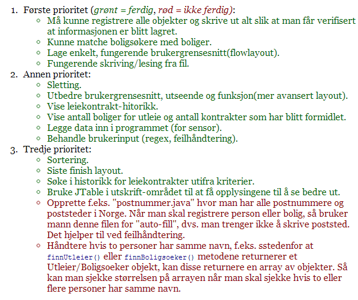
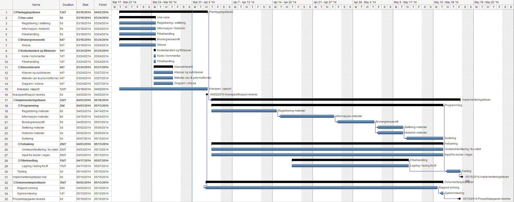
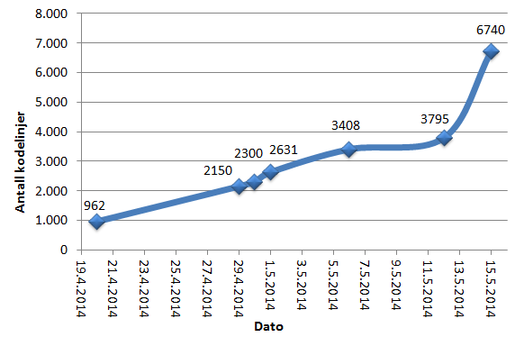

Prosessdokumentasjon
Kronologist gjennomgang
Uke 12
Oppgaven ble sluppet fredag 14. Mars. Vi hadde vårt første gruppemøte tirsdag den 18. Da bestemte vi oss for hvilket oppgavealternativ vi skulle velge. Vi fikk også bestemt enkelte grunnleggende ting ved prosjektet, som at vi skulle bruke utviklingsverktøyet NetBeans og versjonshåndteringssystemet Github. De første ukene fram til 4. april ble i all hovedsak brukt på kravspesifikasjonen som skulle leveres. Vi hadde et nytt møte mandag den 24. Da ble vi i all hovedsak enige i hvordan programmet skulle se ut og fungere i grove trekk, slik at selve programmeringen kunne påbegynnes.
Uke 13
Den første programkoden ble skrevet 27. mars hvor klassehierarki for boliger og personer begynte å få form og innhold. Struktureringen av programmeringsarbeidet var knyttet opp mot følgende prioriteringsrekkefølge:
Hovedpoenget var å først, helst så fort som mulig, få lagd ferdig funksjonalitet for å registrere boliger og personer og lage et enkelt brukergrensesnitt for å kunne skrive ut og verifisere at objektene ble lagret som de skulle. Deretter skulle de resterende kravene fra "arbeidsgiver" få mest oppmerksomhet, før brukergrensesnittet skulle ferdigstilles til slutt. Idéen var også å teste mest mulig underveis og å dokumentere/skrive rapport mest mulig underveis. Vi satte opp en framdriftsplan som viser dette tydelig:
Uke 14
I løpet av fredag den 4. april var forprosjektet fullført og kodingen for alvor påbegynt. Datastrukturen og metoder for innsetting/registrering begynte å ta form. Et enkelt brukergrensesnitt ble også påbegynt.
Uke 15 og 16
Gretar dro deretter til Island, og uka etter var det påskeferie. Dette var den desidert roligste delen av prosjektet der lite fremgang ble notert. Mye av det skyldtes utfordringer med å holde kontakten med hverandre, og diskutere og koordinere arbeid når folk var bortreist. Noe ble likevel gjort. Vi hadde i utgangspunket tenkt å ha alle personer i programmet, altså boligsøkere og utleiere i samme treeSet-mengde. Dette viste seg raskt når vi kom igang, at ikke var noen god løsning. Splittet derfor opp Personmengde til Utleiermengde og Boligsøkermengde.
Uke 17
Etterhvert ble registreringsmetodene fullført og testet, riktignok omtrent en uke på etterskudd i henhold til framdriftsplanen. Denne uken begynte også det grensesnittet som tilslutt skulle bli det ferdige å ta form, ved at klassene BoligsoekerVindu, StartVindu og Boligvindu ble opprettet. Herfra og inn var dessuten den delen av prosjektet der mest ble gjort. Hver ukedag ble brukt på programmering, noe som kan leses fra loggen nedenfor. Kodingen i denne prosessen ble stort sett gjort i samarbeid mellom Eivind og Gretar.
Fremgang målt i antall kodelinjer
Uke 18 og 19
På mange måter den siste fasen av programmeringen. Spesielt mye tid ble brukt på programmering av brukergrensesnitt/layout og regulære utrykk og annen feilhåndtering knyttet til brukerinput. Vi innså dessuten raskt at tiden avsatt til brukergrensesnitt i framdriftsplanen var altfor kort, så vi kom igang tidlig nok med det. Brukte endel tid på å diskutere hvordan all informasjonen om boliger/boligsøkere skulle presenteres for brukeren. Besluttet å i svært stor grad bruke tabeller til dette. Fordelen med tabeller var ryddighet og gode muligheter for å sortere data i kolonnene stigende/synkende.
Uke 20
Alt i alt gikk programmeringen stødig framover gjennom hele prosjektet. Vi møtte aldri på noen problemer av den typen eller størrelse at hele prosjektet gikk i stå. Selve rapportskrivingen ble påbegynt noe sent, og kunne ha vært jevnligere med fra et tidligere stadium. En del tid på slutten gikk også med på å generere data, altså boliger, personer og kontrakter, til programmet. Dette var riktignok til god hjelp når det gjaldt testing av programmet, fordi vi slapp å bruke tid på å fylle inn alt manuelt osv.